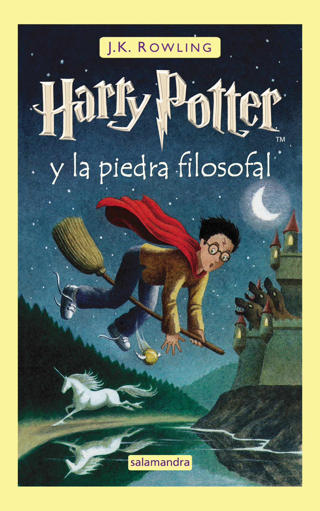

Harry Potter And The Sorcere's Stone

Harry Potter se ha quedado huérfano y vive en casa de sus abominables tíos y el insoportable primo Dudley. Harry se siente muy triste y solo, hasta que un buen día recibe una carta que cambiará su vida para siempre. En ella le comunican que ha sido aceptado como alumno en el Colegio Hogwarts de Magia. A partir de ese momento, la suerte de Harry da un vuelco espectacular. En esa escuela tan especial aprenderá encantamientos, trucos fabulosos y tácticas de defensa contra las malas artes. Se convertirá en el campeón escolar de Quidditch, especie de fútbol aéreo que se juega montado sobre escobas, y hará un puñado de buenos amigos... aunque también algunos temibles enemigos. Pero, sobre todo, conocerá los secretos que le permitirán cumplir su destino. Pues, aunque no lo parezca a primera vista, Harry no es un chico común y corriente: ¡es un verdadero mago!
Harry Potter y la piedra filosofal es el primer libro de la heptalogía acerca del joven mago Harry Potter, escrita por J.K. Rowling. Salió a la venta el 30 de junio de 1997, y se hizo una película basada en el mismo en 2001. El libro y la película salieron en Estados Unidos bajo el título de "Harry Potter y la piedra del hechicero", pues los publicadores querían que el título mostrase que se trataba de magia y hechiceros y fuera entendible para el público, a pesar de que la Piedra Filosofal es un objeto mítico que tiene leyendas desde hace muchos años. Este libro es uno de los más vendidos y traducidos de la historia, superado levemente por Don Quijote de la Mancha, de Miguel de Cervantes. Si bien no ha sido el objeto de la autora impactar sobre la literatura universal por su estilo, el académico franco americano Daniel Herrendorf propone desde 2003 a la Academia Sueca, y a nombre del Fondo de cultura y mecenazgo del sur, que considere la obra para el Premio Nobel de Literatura, petición que Herrendorf reitera anualmente.
Leer ahora